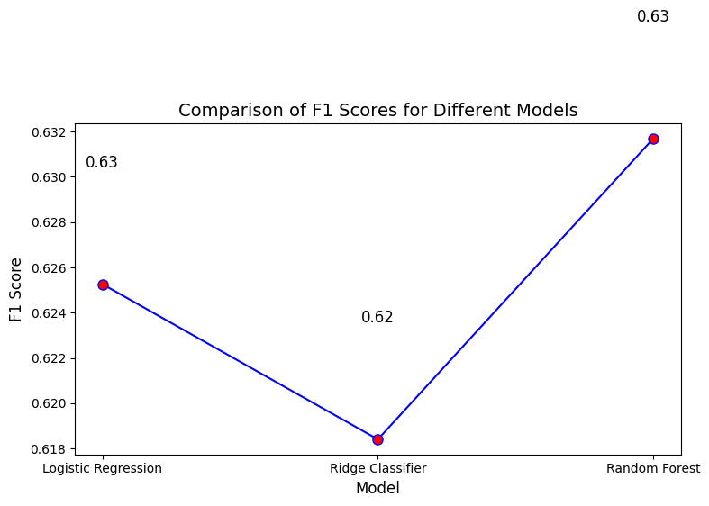

import pandas as pd
df = pd.read_csv('normalized_data.csv')
X = df.drop('ChurnLabel', axis=1)
y = df['ChurnLabel']
from sklearn.preprocessing import LabelEncoder
le = LabelEncoder()
# Encode target variable ('No' -> 0, 'Yes' -> 1)
y_encoded = le.fit_transform(y)
from sklearn.model_selection import train_test_split
X_train, X_test, y_train, y_test = train_test_split(X, y_encoded, test_size=0.2, random_state=42, stratify=y)
import dagshub
# dagshub.init(repo_owner='hrootscraft', repo_name='my-book', mlflow=True)
DAGSHUB_TOKEN = dagshub.auth.get_token()
---------------------------------------------------------------------------
ModuleNotFoundError Traceback (most recent call last)
Cell In[5], line 1
----> 1 import dagshub
3 # dagshub.init(repo_owner='hrootscraft', repo_name='my-book', mlflow=True)
4 DAGSHUB_TOKEN = dagshub.auth.get_token()
ModuleNotFoundError: No module named 'dagshub'
from sklearn.base import BaseEstimator, TransformerMixin
from sklearn.preprocessing import StandardScaler, OneHotEncoder
import numpy as np
import math
class CustomPreprocessor(BaseEstimator, TransformerMixin):
def __init__(self):
self.columns_to_drop = ['Country', 'State', 'CustomerID', 'Latitude',
'Longitude', 'ChurnScore', 'CLTV',
'ChurnReason', 'ZipCode', 'City']
self.numeric_features = ['TenureMonths', 'MonthlyCharges', 'TotalCharges']
self.categorical_features = None # Will be set during fit
self.scaler = StandardScaler()
self.encoder = OneHotEncoder(sparse_output=False, handle_unknown='ignore')
self.encoded_feature_names = None
def _impute_total_charges(self, X):
X_ = X.copy()
for index, row in X_.iterrows():
if math.isnan(row['TotalCharges']):
X_.at[index, 'TotalCharges'] = (
X_.at[index, 'MonthlyCharges'] * X_.at[index, 'TenureMonths']
)
return X_
def fit(self, X, y=None):
# Set categorical features (excluding target)
self.categorical_features = [col for col in X.select_dtypes(include=['object']).columns
if col not in self.columns_to_drop + ['ChurnLabel']]
X_ = X.copy()
X_ = self._impute_total_charges(X_)
X_ = X_.drop(columns=self.columns_to_drop, errors='ignore')
X_['TotalCharges'] = np.log1p(X_['TotalCharges'])
self.scaler.fit(X_[self.numeric_features])
self.encoder.fit(X_[self.categorical_features])
self.encoded_feature_names = []
for i, feature in enumerate(self.categorical_features):
feature_categories = self.encoder.categories_[i]
self.encoded_feature_names.extend([f"{feature}_{cat}" for cat in feature_categories])
return self
def transform(self, X):
X_ = X.copy()
X_ = self._impute_total_charges(X_)
X_ = X_.drop(columns=self.columns_to_drop, errors='ignore')
X_['TotalCharges'] = np.log1p(X_['TotalCharges'])
X_scaled = pd.DataFrame(
self.scaler.transform(X_[self.numeric_features]),
columns=self.numeric_features,
index=X_.index
)
X_encoded = pd.DataFrame(
self.encoder.transform(X_[self.categorical_features]),
columns=self.encoded_feature_names,
index=X_.index
)
return pd.concat([X_scaled, X_encoded], axis=1)
from sklearn.metrics import f1_score, confusion_matrix, classification_report
from sklearn.linear_model import LogisticRegression, RidgeClassifier
from sklearn.model_selection import GridSearchCV, cross_validate
import mlflow
from sklearn.pipeline import Pipeline
import time, os
from mlflow.models import infer_signature
# Set MLflow tracking URI and credentials
MLFLOW_TRACKING_URI = "https://dagshub.com/hrootscraft/my-book.mlflow"
os.environ['MLFLOW_TRACKING_USERNAME'] = 'hrootscraft'
os.environ['MLFLOW_TRACKING_PASSWORD'] = DAGSHUB_TOKEN
mlflow.set_tracking_uri(uri=MLFLOW_TRACKING_URI)
mlflow.set_experiment("churn_prediction")
def train_logistic_regression(X_train, X_test, y_train, y_test, cv_folds=5):
"""
Trains and evaluates the model with cross-validation and hyperparameter tuning
"""
with mlflow.start_run(run_name="logistic_regression"):
t1 = time.time()
# Create pipeline
pipeline = Pipeline([
('preprocessor', CustomPreprocessor()),
('classifier', LogisticRegression())
])
# Define parameter grid
param_grid = {
'classifier__C': [1e-4, 1e-3, 1e-2, 1e-1, 1e0, 1e1, 1e2, 1e3, 1e4],
'classifier__solver': ['liblinear'],
'classifier__class_weight': ['balanced']
}
# Perform GridSearchCV
grid_search = GridSearchCV(
pipeline, param_grid,
scoring='f1',
cv=cv_folds,
n_jobs=-1,
verbose=1
)
# Fit the model
grid_search.fit(X_train, y_train)
# Log best parameters
mlflow.log_params(grid_search.best_params_)
# Perform cross-validation with best model
cv_results = cross_validate(
grid_search.best_estimator_,
X_train, y_train,
cv=cv_folds,
scoring='f1',
return_train_score=True
)
# Log cross-validation results
mlflow.log_metric("cv_f1_mean", cv_results['test_score'].mean())
mlflow.log_metric("cv_f1_std", cv_results['test_score'].std())
# Get predictions on test set
y_pred = grid_search.predict(X_test)
# Calculate metrics
f1 = f1_score(y_test, y_pred)
tn, fp, fn, tp = confusion_matrix(y_test, y_pred).ravel()
# Log metrics
metrics = {
"test_f1": f1,
"true_negatives": tn,
"false_positives": fp,
"false_negatives": fn,
"true_positives": tp
}
mlflow.log_metrics(metrics)
# Log model
signature = infer_signature(X_test, y_pred)
mlflow.sklearn.log_model(
sk_model=grid_search.best_estimator_,
artifact_path="churn_model",
signature=signature,
input_example=X_test.iloc[0:1],
registered_model_name="LogisticRegression"
)
t2 = time.time()
print(f"Training completed in {t2-t1:.2f} seconds")
print(f"Best parameters: {grid_search.best_params_}")
print(f"Best CV f1-score: {grid_search.best_score_:.4f}")
print(f"Test f1-score: {f1:.4f}")
print("\nConfusion Matrix:")
print(f"TN: {tn}, FP: {fp}")
print(f"FN: {fn}, TP: {tp}")
return grid_search.best_estimator_, f1
logi_model = train_logistic_regression(X_train, X_test, y_train, y_test)
Fitting 5 folds for each of 9 candidates, totalling 45 fits
/home/rutuja/miniconda3/envs/jupyterbook/lib/python3.10/site-packages/mlflow/types/utils.py:435: UserWarning: Hint: Inferred schema contains integer column(s). Integer columns in Python cannot represent missing values. If your input data contains missing values at inference time, it will be encoded as floats and will cause a schema enforcement error. The best way to avoid this problem is to infer the model schema based on a realistic data sample (training dataset) that includes missing values. Alternatively, you can declare integer columns as doubles (float64) whenever these columns may have missing values. See `Handling Integers With Missing Values <https://www.mlflow.org/docs/latest/models.html#handling-integers-with-missing-values>`_ for more details.
warnings.warn(
Registered model 'LogisticRegression' already exists. Creating a new version of this model...
2024/12/22 17:41:53 INFO mlflow.store.model_registry.abstract_store: Waiting up to 300 seconds for model version to finish creation. Model name: LogisticRegression, version 6
Created version '6' of model 'LogisticRegression'.
Training completed in 25.20 seconds
Best parameters: {'classifier__C': 100.0, 'classifier__class_weight': 'balanced', 'classifier__solver': 'liblinear'}
Best CV f1-score: 0.6498
Test f1-score: 0.6253
Confusion Matrix:
TN: 756, FP: 279
FN: 77, TP: 297
🏃 View run logistic_regression at: https://dagshub.com/hrootscraft/my-book.mlflow/#/experiments/0/runs/e5d2f47bda584bf382ae944d0b661299
🧪 View experiment at: https://dagshub.com/hrootscraft/my-book.mlflow/#/experiments/0
def train_ridge_classifier(X_train, X_test, y_train, y_test, cv_folds=5):
"""
Trains and evaluates Ridge Classifier with cross-validation and hyperparameter tuning
"""
with mlflow.start_run(run_name="ridge_classifier"):
t1 = time.time()
# Create pipeline
pipeline = Pipeline([
('preprocessor', CustomPreprocessor()),
('classifier', RidgeClassifier())
])
# Define parameter grid
param_grid = {
'classifier__alpha': [0.1, 1.0, 10.0, 100.0],
'classifier__class_weight': ['balanced'],
'classifier__solver': ['auto', 'svd', 'cholesky']
}
# Perform GridSearchCV
grid_search = GridSearchCV(
pipeline, param_grid,
scoring='f1',
cv=cv_folds,
n_jobs=-1,
verbose=1
)
# Rest of the code follows the same pattern as your logistic regression
grid_search.fit(X_train, y_train)
mlflow.log_params(grid_search.best_params_)
cv_results = cross_validate(
grid_search.best_estimator_,
X_train, y_train,
cv=cv_folds,
scoring='f1',
return_train_score=True
)
# Log cross-validation results
mlflow.log_metric("cv_f1_mean", cv_results['test_score'].mean())
mlflow.log_metric("cv_f1_std", cv_results['test_score'].std())
y_pred = grid_search.predict(X_test)
f1 = f1_score(y_test, y_pred)
tn, fp, fn, tp = confusion_matrix(y_test, y_pred).ravel()
metrics = {
"test_f1": f1,
"true_negatives": tn,
"false_positives": fp,
"false_negatives": fn,
"true_positives": tp
}
mlflow.log_metrics(metrics)
signature = infer_signature(X_test, y_pred)
mlflow.sklearn.log_model(
sk_model=grid_search.best_estimator_,
artifact_path="ridge_model",
signature=signature,
input_example=X_test.iloc[0:1],
registered_model_name="RidgeClassifier"
)
t2 = time.time()
print(f"Training completed in {t2-t1:.2f} seconds")
print(f"Best parameters: {grid_search.best_params_}")
print(f"Best CV f1-score: {grid_search.best_score_:.4f}")
print(f"Test f1-score: {f1:.4f}")
print("\nConfusion Matrix:")
print(f"TN: {tn}, FP: {fp}")
print(f"FN: {fn}, TP: {tp}")
return grid_search.best_estimator_, f1
ridge_model = train_ridge_classifier(X_train, X_test, y_train, y_test)
Fitting 5 folds for each of 12 candidates, totalling 60 fits
/home/rutuja/miniconda3/envs/jupyterbook/lib/python3.10/site-packages/mlflow/types/utils.py:435: UserWarning: Hint: Inferred schema contains integer column(s). Integer columns in Python cannot represent missing values. If your input data contains missing values at inference time, it will be encoded as floats and will cause a schema enforcement error. The best way to avoid this problem is to infer the model schema based on a realistic data sample (training dataset) that includes missing values. Alternatively, you can declare integer columns as doubles (float64) whenever these columns may have missing values. See `Handling Integers With Missing Values <https://www.mlflow.org/docs/latest/models.html#handling-integers-with-missing-values>`_ for more details.
warnings.warn(
Registered model 'RidgeClassifier' already exists. Creating a new version of this model...
2024/12/22 17:42:21 INFO mlflow.store.model_registry.abstract_store: Waiting up to 300 seconds for model version to finish creation. Model name: RidgeClassifier, version 6
Created version '6' of model 'RidgeClassifier'.
Training completed in 26.72 seconds
Best parameters: {'classifier__alpha': 100.0, 'classifier__class_weight': 'balanced', 'classifier__solver': 'auto'}
Best CV f1-score: 0.6464
Test f1-score: 0.6184
Confusion Matrix:
TN: 741, FP: 294
FN: 75, TP: 299
🏃 View run ridge_classifier at: https://dagshub.com/hrootscraft/my-book.mlflow/#/experiments/0/runs/d987da39a0c1498396bee34fa7ab6de2
🧪 View experiment at: https://dagshub.com/hrootscraft/my-book.mlflow/#/experiments/0
from sklearn.ensemble import RandomForestClassifier
def train_random_forest_classifier(X_train, X_test, y_train, y_test, cv_folds=5):
"""
Trains and evaluates Random Forest Classifier with cross-validation and hyperparameter tuning
"""
with mlflow.start_run(run_name="random_forest_classifier"):
t1 = time.time()
pipeline = Pipeline([
('preprocessor', CustomPreprocessor()),
('classifier', RandomForestClassifier(random_state=42))
])
param_grid = {
'classifier__n_estimators': [100, 200, 300],
'classifier__max_depth': [10, 20, 30, None],
'classifier__min_samples_split': [2, 5, 10],
'classifier__min_samples_leaf': [1, 2, 4],
'classifier__class_weight': ['balanced']
}
grid_search = GridSearchCV(
pipeline, param_grid,
scoring='f1',
cv=cv_folds,
n_jobs=-1,
verbose=1
)
# Rest follows the same pattern
grid_search.fit(X_train, y_train)
mlflow.log_params(grid_search.best_params_)
cv_results = cross_validate(
grid_search.best_estimator_,
X_train, y_train,
cv=cv_folds,
scoring='f1',
return_train_score=True
)
mlflow.log_metric("cv_f1_mean", cv_results['test_score'].mean())
mlflow.log_metric("cv_f1_std", cv_results['test_score'].std())
y_pred = grid_search.predict(X_test)
f1 = f1_score(y_test, y_pred)
tn, fp, fn, tp = confusion_matrix(y_test, y_pred).ravel()
metrics = {
"test_f1": f1,
"true_negatives": tn,
"false_positives": fp,
"false_negatives": fn,
"true_positives": tp
}
mlflow.log_metrics(metrics)
signature = infer_signature(X_test, y_pred)
mlflow.sklearn.log_model(
sk_model=grid_search.best_estimator_,
artifact_path="random_forest_model",
signature=signature,
input_example=X_test.iloc[0:1],
registered_model_name="RandomForestClassifier"
)
t2 = time.time()
print(f"Training completed in {t2-t1:.2f} seconds")
print(f"Best parameters: {grid_search.best_params_}")
print(f"Best CV f1-score: {grid_search.best_score_:.4f}")
print(f"Test f1-score: {f1:.4f}")
print("\nConfusion Matrix:")
print(f"TN: {tn}, FP: {fp}")
print(f"FN: {fn}, TP: {tp}")
return grid_search.best_estimator_, f1
rndf_model = train_random_forest_classifier(X_train, X_test, y_train, y_test)
Fitting 5 folds for each of 108 candidates, totalling 540 fits
/home/rutuja/miniconda3/envs/jupyterbook/lib/python3.10/site-packages/mlflow/types/utils.py:435: UserWarning: Hint: Inferred schema contains integer column(s). Integer columns in Python cannot represent missing values. If your input data contains missing values at inference time, it will be encoded as floats and will cause a schema enforcement error. The best way to avoid this problem is to infer the model schema based on a realistic data sample (training dataset) that includes missing values. Alternatively, you can declare integer columns as doubles (float64) whenever these columns may have missing values. See `Handling Integers With Missing Values <https://www.mlflow.org/docs/latest/models.html#handling-integers-with-missing-values>`_ for more details.
warnings.warn(
Registered model 'RandomForestClassifier' already exists. Creating a new version of this model...
2024/12/22 17:47:49 INFO mlflow.store.model_registry.abstract_store: Waiting up to 300 seconds for model version to finish creation. Model name: RandomForestClassifier, version 2
Created version '2' of model 'RandomForestClassifier'.
Training completed in 327.47 seconds
Best parameters: {'classifier__class_weight': 'balanced', 'classifier__max_depth': 10, 'classifier__min_samples_leaf': 4, 'classifier__min_samples_split': 10, 'classifier__n_estimators': 100}
Best CV f1-score: 0.6501
Test f1-score: 0.6317
Confusion Matrix:
TN: 796, FP: 239
FN: 91, TP: 283
🏃 View run random_forest_classifier at: https://dagshub.com/hrootscraft/my-book.mlflow/#/experiments/0/runs/630bd76fb60c43e4a7f4322241ea58af
🧪 View experiment at: https://dagshub.com/hrootscraft/my-book.mlflow/#/experiments/0
COMPARE F1 SCORES#
import matplotlib.pyplot as plt
import numpy as np
# Train the models and get their F1 scores
logistic_regression_model, logistic_regression_f1 = train_logistic_regression(X_train, X_test, y_train, y_test)
ridge_classifier_model, ridge_classifier_f1 = train_ridge_classifier(X_train, X_test, y_train, y_test)
random_forest_model, random_forest_f1 = train_random_forest_classifier(X_train, X_test, y_train, y_test)
# Store the F1 scores
model_names = ['Logistic Regression', 'Ridge Classifier', 'Random Forest']
f1_scores = [logistic_regression_f1, ridge_classifier_f1, random_forest_f1]
# Print the F1 scores for verification
for model, f1 in zip(model_names, f1_scores):
print(f"{model}: F1 Score = {f1:.4f}")
Fitting 5 folds for each of 9 candidates, totalling 45 fits
/home/rutuja/miniconda3/envs/jupyterbook/lib/python3.10/site-packages/mlflow/types/utils.py:435: UserWarning: Hint: Inferred schema contains integer column(s). Integer columns in Python cannot represent missing values. If your input data contains missing values at inference time, it will be encoded as floats and will cause a schema enforcement error. The best way to avoid this problem is to infer the model schema based on a realistic data sample (training dataset) that includes missing values. Alternatively, you can declare integer columns as doubles (float64) whenever these columns may have missing values. See `Handling Integers With Missing Values <https://www.mlflow.org/docs/latest/models.html#handling-integers-with-missing-values>`_ for more details.
warnings.warn(
Registered model 'LogisticRegression' already exists. Creating a new version of this model...
2024/12/22 19:23:50 INFO mlflow.store.model_registry.abstract_store: Waiting up to 300 seconds for model version to finish creation. Model name: LogisticRegression, version 7
Created version '7' of model 'LogisticRegression'.
Training completed in 22.97 seconds
Best parameters: {'classifier__C': 100.0, 'classifier__class_weight': 'balanced', 'classifier__solver': 'liblinear'}
Best CV f1-score: 0.6498
Test f1-score: 0.6253
Confusion Matrix:
TN: 756, FP: 279
FN: 77, TP: 297
🏃 View run logistic_regression at: https://dagshub.com/hrootscraft/my-book.mlflow/#/experiments/0/runs/43c5161c884d4d7388aa85dd2149d143
🧪 View experiment at: https://dagshub.com/hrootscraft/my-book.mlflow/#/experiments/0
Fitting 5 folds for each of 12 candidates, totalling 60 fits
/home/rutuja/miniconda3/envs/jupyterbook/lib/python3.10/site-packages/mlflow/types/utils.py:435: UserWarning: Hint: Inferred schema contains integer column(s). Integer columns in Python cannot represent missing values. If your input data contains missing values at inference time, it will be encoded as floats and will cause a schema enforcement error. The best way to avoid this problem is to infer the model schema based on a realistic data sample (training dataset) that includes missing values. Alternatively, you can declare integer columns as doubles (float64) whenever these columns may have missing values. See `Handling Integers With Missing Values <https://www.mlflow.org/docs/latest/models.html#handling-integers-with-missing-values>`_ for more details.
warnings.warn(
Registered model 'RidgeClassifier' already exists. Creating a new version of this model...
2024/12/22 19:24:18 INFO mlflow.store.model_registry.abstract_store: Waiting up to 300 seconds for model version to finish creation. Model name: RidgeClassifier, version 7
Created version '7' of model 'RidgeClassifier'.
Training completed in 27.04 seconds
Best parameters: {'classifier__alpha': 100.0, 'classifier__class_weight': 'balanced', 'classifier__solver': 'auto'}
Best CV f1-score: 0.6464
Test f1-score: 0.6184
Confusion Matrix:
TN: 741, FP: 294
FN: 75, TP: 299
🏃 View run ridge_classifier at: https://dagshub.com/hrootscraft/my-book.mlflow/#/experiments/0/runs/a7a68902faa04fc5b297f8d92d50a0b4
🧪 View experiment at: https://dagshub.com/hrootscraft/my-book.mlflow/#/experiments/0
Fitting 5 folds for each of 108 candidates, totalling 540 fits
/home/rutuja/miniconda3/envs/jupyterbook/lib/python3.10/site-packages/mlflow/types/utils.py:435: UserWarning: Hint: Inferred schema contains integer column(s). Integer columns in Python cannot represent missing values. If your input data contains missing values at inference time, it will be encoded as floats and will cause a schema enforcement error. The best way to avoid this problem is to infer the model schema based on a realistic data sample (training dataset) that includes missing values. Alternatively, you can declare integer columns as doubles (float64) whenever these columns may have missing values. See `Handling Integers With Missing Values <https://www.mlflow.org/docs/latest/models.html#handling-integers-with-missing-values>`_ for more details.
warnings.warn(
Registered model 'RandomForestClassifier' already exists. Creating a new version of this model...
2024/12/22 19:29:25 INFO mlflow.store.model_registry.abstract_store: Waiting up to 300 seconds for model version to finish creation. Model name: RandomForestClassifier, version 3
Created version '3' of model 'RandomForestClassifier'.
Training completed in 305.56 seconds
Best parameters: {'classifier__class_weight': 'balanced', 'classifier__max_depth': 10, 'classifier__min_samples_leaf': 4, 'classifier__min_samples_split': 10, 'classifier__n_estimators': 100}
Best CV f1-score: 0.6501
Test f1-score: 0.6317
Confusion Matrix:
TN: 796, FP: 239
FN: 91, TP: 283
🏃 View run random_forest_classifier at: https://dagshub.com/hrootscraft/my-book.mlflow/#/experiments/0/runs/2b401a944e9944b3893bf1b977be7a2b
🧪 View experiment at: https://dagshub.com/hrootscraft/my-book.mlflow/#/experiments/0
Logistic Regression: F1 Score = 0.6253
Ridge Classifier: F1 Score = 0.6184
Random Forest: F1 Score = 0.6317
plt.figure(figsize=(8, 6))
# Create a line plot
plt.plot(model_names, f1_scores, marker='o', linestyle='-', color='b', markerfacecolor='red', markersize=8)
# Add annotations for each point
for i, score in enumerate(f1_scores):
plt.text(model_names[i], score + 0.005, f'{score:.2f}', ha='center', va='bottom', fontsize=12)
# Add titles and labels
plt.title('Comparison of F1 Scores for Different Models', fontsize=14)
plt.xlabel('Model', fontsize=12)
plt.ylabel('F1 Score', fontsize=12)
# Show the plot
plt.tight_layout()
plt.show()

SAVE THE BEST MODEL#
import joblib
# Save the trained model to a pickle file
joblib.dump(rndf_model, 'rndf_model.pkl')
---------------------------------------------------------------------------
PicklingError Traceback (most recent call last)
Cell In[31], line 4
1 import joblib
3 # Save the trained model to a pickle file
----> 4 joblib.dump(rndf_model, 'rndf_model.pkl')
File ~/.local/lib/python3.10/site-packages/joblib/numpy_pickle.py:553, in dump(value, filename, compress, protocol, cache_size)
551 elif is_filename:
552 with open(filename, 'wb') as f:
--> 553 NumpyPickler(f, protocol=protocol).dump(value)
554 else:
555 NumpyPickler(filename, protocol=protocol).dump(value)
File ~/miniconda3/envs/jupyterbook/lib/python3.10/pickle.py:487, in _Pickler.dump(self, obj)
485 if self.proto >= 4:
486 self.framer.start_framing()
--> 487 self.save(obj)
488 self.write(STOP)
489 self.framer.end_framing()
File ~/.local/lib/python3.10/site-packages/joblib/numpy_pickle.py:355, in NumpyPickler.save(self, obj)
352 wrapper.write_array(obj, self)
353 return
--> 355 return Pickler.save(self, obj)
File ~/miniconda3/envs/jupyterbook/lib/python3.10/pickle.py:603, in _Pickler.save(self, obj, save_persistent_id)
599 raise PicklingError("Tuple returned by %s must have "
600 "two to six elements" % reduce)
602 # Save the reduce() output and finally memoize the object
--> 603 self.save_reduce(obj=obj, *rv)
File ~/miniconda3/envs/jupyterbook/lib/python3.10/pickle.py:717, in _Pickler.save_reduce(self, func, args, state, listitems, dictitems, state_setter, obj)
715 if state is not None:
716 if state_setter is None:
--> 717 save(state)
718 write(BUILD)
719 else:
720 # If a state_setter is specified, call it instead of load_build
721 # to update obj's with its previous state.
722 # First, push state_setter and its tuple of expected arguments
723 # (obj, state) onto the stack.
File ~/.local/lib/python3.10/site-packages/joblib/numpy_pickle.py:355, in NumpyPickler.save(self, obj)
352 wrapper.write_array(obj, self)
353 return
--> 355 return Pickler.save(self, obj)
File ~/miniconda3/envs/jupyterbook/lib/python3.10/pickle.py:560, in _Pickler.save(self, obj, save_persistent_id)
558 f = self.dispatch.get(t)
559 if f is not None:
--> 560 f(self, obj) # Call unbound method with explicit self
561 return
563 # Check private dispatch table if any, or else
564 # copyreg.dispatch_table
File ~/miniconda3/envs/jupyterbook/lib/python3.10/pickle.py:972, in _Pickler.save_dict(self, obj)
969 self.write(MARK + DICT)
971 self.memoize(obj)
--> 972 self._batch_setitems(obj.items())
File ~/miniconda3/envs/jupyterbook/lib/python3.10/pickle.py:998, in _Pickler._batch_setitems(self, items)
996 for k, v in tmp:
997 save(k)
--> 998 save(v)
999 write(SETITEMS)
1000 elif n:
File ~/.local/lib/python3.10/site-packages/joblib/numpy_pickle.py:355, in NumpyPickler.save(self, obj)
352 wrapper.write_array(obj, self)
353 return
--> 355 return Pickler.save(self, obj)
File ~/miniconda3/envs/jupyterbook/lib/python3.10/pickle.py:560, in _Pickler.save(self, obj, save_persistent_id)
558 f = self.dispatch.get(t)
559 if f is not None:
--> 560 f(self, obj) # Call unbound method with explicit self
561 return
563 # Check private dispatch table if any, or else
564 # copyreg.dispatch_table
File ~/miniconda3/envs/jupyterbook/lib/python3.10/pickle.py:932, in _Pickler.save_list(self, obj)
929 self.write(MARK + LIST)
931 self.memoize(obj)
--> 932 self._batch_appends(obj)
File ~/miniconda3/envs/jupyterbook/lib/python3.10/pickle.py:956, in _Pickler._batch_appends(self, items)
954 write(MARK)
955 for x in tmp:
--> 956 save(x)
957 write(APPENDS)
958 elif n:
File ~/.local/lib/python3.10/site-packages/joblib/numpy_pickle.py:355, in NumpyPickler.save(self, obj)
352 wrapper.write_array(obj, self)
353 return
--> 355 return Pickler.save(self, obj)
File ~/miniconda3/envs/jupyterbook/lib/python3.10/pickle.py:560, in _Pickler.save(self, obj, save_persistent_id)
558 f = self.dispatch.get(t)
559 if f is not None:
--> 560 f(self, obj) # Call unbound method with explicit self
561 return
563 # Check private dispatch table if any, or else
564 # copyreg.dispatch_table
File ~/miniconda3/envs/jupyterbook/lib/python3.10/pickle.py:887, in _Pickler.save_tuple(self, obj)
885 if n <= 3 and self.proto >= 2:
886 for element in obj:
--> 887 save(element)
888 # Subtle. Same as in the big comment below.
889 if id(obj) in memo:
File ~/.local/lib/python3.10/site-packages/joblib/numpy_pickle.py:355, in NumpyPickler.save(self, obj)
352 wrapper.write_array(obj, self)
353 return
--> 355 return Pickler.save(self, obj)
File ~/miniconda3/envs/jupyterbook/lib/python3.10/pickle.py:603, in _Pickler.save(self, obj, save_persistent_id)
599 raise PicklingError("Tuple returned by %s must have "
600 "two to six elements" % reduce)
602 # Save the reduce() output and finally memoize the object
--> 603 self.save_reduce(obj=obj, *rv)
File ~/miniconda3/envs/jupyterbook/lib/python3.10/pickle.py:687, in _Pickler.save_reduce(self, func, args, state, listitems, dictitems, state_setter, obj)
684 raise PicklingError(
685 "args[0] from __newobj__ args has the wrong class")
686 args = args[1:]
--> 687 save(cls)
688 save(args)
689 write(NEWOBJ)
File ~/.local/lib/python3.10/site-packages/joblib/numpy_pickle.py:355, in NumpyPickler.save(self, obj)
352 wrapper.write_array(obj, self)
353 return
--> 355 return Pickler.save(self, obj)
File ~/miniconda3/envs/jupyterbook/lib/python3.10/pickle.py:560, in _Pickler.save(self, obj, save_persistent_id)
558 f = self.dispatch.get(t)
559 if f is not None:
--> 560 f(self, obj) # Call unbound method with explicit self
561 return
563 # Check private dispatch table if any, or else
564 # copyreg.dispatch_table
File ~/miniconda3/envs/jupyterbook/lib/python3.10/pickle.py:1129, in _Pickler.save_type(self, obj)
1127 elif obj is type(...):
1128 return self.save_reduce(type, (...,), obj=obj)
-> 1129 return self.save_global(obj)
File ~/miniconda3/envs/jupyterbook/lib/python3.10/pickle.py:1076, in _Pickler.save_global(self, obj, name)
1074 else:
1075 if obj2 is not obj:
-> 1076 raise PicklingError(
1077 "Can't pickle %r: it's not the same object as %s.%s" %
1078 (obj, module_name, name))
1080 if self.proto >= 2:
1081 code = _extension_registry.get((module_name, name))
PicklingError: Can't pickle <class '__main__.CustomPreprocessor'>: it's not the same object as __main__.CustomPreprocessor
USE FAST API TO DEPLOY MODEL#
from fastapi import FastAPI
import joblib
import numpy as np
# Initialize FastAPI app
app = FastAPI()
# Load the saved model
model = joblib.load('rndf_model.pkl')
@app.post("/predict/")
async def predict(features: list):
"""
Endpoint to make predictions.
:param features: List of input features for prediction.
:return: Predicted class or probabilities.
"""
# Convert input features to a NumPy array
input_data = np.array(features).reshape(1, -1)
# Make prediction using the loaded model
prediction = model.predict(input_data)
return {"prediction": prediction.tolist()}
---------------------------------------------------------------------------
EOFError Traceback (most recent call last)
Cell In[34], line 11
8 app = FastAPI()
10 # Load the saved model
---> 11 model = joblib.load('rndf_model.pkl')
13 @app.post("/predict/")
14 async def predict(features: list):
15 """
16 Endpoint to make predictions.
17 :param features: List of input features for prediction.
18 :return: Predicted class or probabilities.
19 """
File ~/.local/lib/python3.10/site-packages/joblib/numpy_pickle.py:658, in load(filename, mmap_mode)
652 if isinstance(fobj, str):
653 # if the returned file object is a string, this means we
654 # try to load a pickle file generated with an version of
655 # Joblib so we load it with joblib compatibility function.
656 return load_compatibility(fobj)
--> 658 obj = _unpickle(fobj, filename, mmap_mode)
659 return obj
File ~/.local/lib/python3.10/site-packages/joblib/numpy_pickle.py:577, in _unpickle(fobj, filename, mmap_mode)
575 obj = None
576 try:
--> 577 obj = unpickler.load()
578 if unpickler.compat_mode:
579 warnings.warn("The file '%s' has been generated with a "
580 "joblib version less than 0.10. "
581 "Please regenerate this pickle file."
582 % filename,
583 DeprecationWarning, stacklevel=3)
File ~/miniconda3/envs/jupyterbook/lib/python3.10/pickle.py:1211, in _Unpickler.load(self)
1209 key = read(1)
1210 if not key:
-> 1211 raise EOFError
1212 assert isinstance(key, bytes_types)
1213 dispatch[key[0]](self)
EOFError: